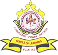

Saraswathi Vidhyashram
Matric Higher Sec School
Address
Sathy main Road,Kavindapadi,
Bhavani (Tk),
Erode (Dt) - 638 455.
Email : svsschoolkvp@gmail.com
Contact
Correspondent : N P Asaithambi B.A, B.L,
(+91 98429 08086)
Principal: R.Karuppanasamy M.Sc., M.Ed.,
(+91 98429 52929)
Office: 04256-241773, 244347
Gallery
---------------------------
VISION & MISSION
OUR VISION
To provide holistic and quality education to the children in the rural areas at affordable cost so as to enable them achieve high academic performance
and become responsible citizens and competitive persons in all walks of life.
OUR MISSION
- To achieve quality through introduction of effective teaching learning programmes such as activity- based learning and use of modern technical
tools besides class-room teaching.
- To expose the students to beyond-the-syllabus contents and audiovisual sessions for clarity of concepts and knowledge enrichment.
- To create the necessary ecosystem to train and encourage participative and analytical learning and critical thinking.
Read more